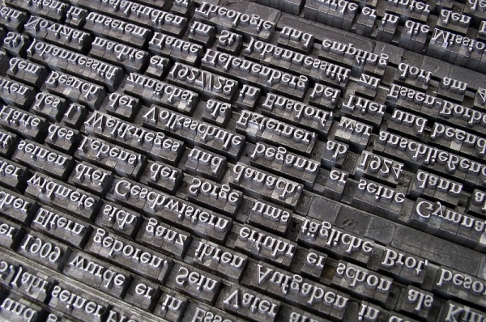

- 

Humpty Dumpty
Strategia Humpty Dumpty se referă la folosirea termenilor într-un mod cu totul personal, eludând semnificaţia obişnuită a acestora, fapt care poate conduce la un anumit tip de ambiguitate.
Nu ne putem crea, desigur, propriile înţelesuri pentru cuvinte, însă pretenţia la propriile înţelesuri poate răzbate uneori în argumentare. De pildă, în apărarea unui politician care a construit nişte sate unor sinistraţi, se spune: „Este un om cu adevărat bun”. Avem de-a face aici cu o strategie Humpty Dumpty, de vreme ce este deturnat sensul expresiei „cu adevărat bun” pentru politicianul respectiv, care avea un comportament huliganic chiar la televizor şi care s-a dovedit a fi corupt, fiind în cele din urmă judecat şi închis.
O atenţie aparte este acordată propagandei contemporane, comercială sau politică. Argumentarea sofistică apare mai ales în discursurile propagandistice şi este legată mai ales de limbaj. Vom defini propaganda ca fiind „folosirea unor expresii, istorisiri, imagini, adevărate sau nu, pentru a influenţa credinţele şi acţiunile publicului, pentru a promova interesele propagandistului, fără a ţine cont de interesele publicului”, publicul sau auditoriul fiind un grup de oameni pe care propagandistul vrea să-l convingă de „corectitudinea” argumentelor, explicaţiilor, ideilor sau atitudinilor lui.
Este motivul pentru care sunt dezvăluite „trucurile” utilizate de propagandist:
– „Toată lumea face asta”. Deci şi tu trebuie să o faci (a se vedea sofismul „apelul la popor”);
– Repetiţia unor cuvinte, elemente-cheie de convingere: „Cred cu tărie asta. Cred într-adevăr!”;
– Încrederea în sine, redată printr-o voce sigură, hotărâtă, întrucât oamenii sprijină de obicei un om hotărât, nu unul slab;
– Aparenţa sincerităţii (realizată prin cuvinte speciale; vezi, mai sus, apelul la sinceritate);
– Tonul vocii poate reda îngăduinţa sau intoleranţa faţă de un anumit aspect. În formularea „Îi vom pedepsi pe cei care au furat voturi la referendum”, vom sesiza blândeţea sau hotărârea vocii şi vom descoperi adevăratele intenţii ale celui care a pronunţat-o;
– Simplificarea excesivă, prin prezentarea doar a unei părţi a problemei care de obicei comportă mai multe soluţii;
– „Să spunem lucrurilor pe nume”. Propagandistul nu ezită să utilizeze formule emfatice, termeni peiorativi sau să dea etichete directe (rasist, reacţionar, anarhist, comunist);
– Folosirea de stereotipuri. Este o variaţie a spunerii lucrurilor pe nume şi a simplificării excesive; de pildă, propagandistul ia o caracteristică anume a unei persoane şi o înfăţişează ca singura trăsătură, eludând personalitatea mai complexă a acesteia;
– Tot aşa, se pot folosi citate scoase din context, care pot denatura total ideea de bază susţinută în contextul larg;
– Folosirea de generalităţi scânteietoare: „Trebuie să reformăm sistemul de taxe”; „Sărăcia acestei ţări se datorează taxelor mari”;
– Folosirea de sloganuri (de efect): „America – love it or leave it”; „Make love, not war”; „Când armele sunt scoase în afara legii, doar nelegiuiţii vor avea arme”;
– Transferul. Este o tehnică de a transfera emoţiile de la o sursă la alta. Reclama la Marlboro invită americanul de a transfera mândria patriotică pozitivă a peisajului din jurul cowboy-ului în invitaţia de a fuma ţigările respectivei mărci, produs al aceleiaşi ţări;
– Recomandarea unei personalităţi. Variantă a transferului, constă în oferirea exemplului unei personalităţi cunoscute pentru convingerea auditoriului de a face ceva sau de a cumpăra ceva;
– Oameni simpli. Propagandistul încearcă să se identifice cu mulţimea: „Sunt unul de-al vostru”;
– Apelul la snobism. Dimpotrivă, propaganda poate apela la nevoile cuiva de a se simţi diferit: „Pentru persoanele care ştiu ce înseamnă gustul”, „Nu pentru oricine”, „Calitate pentru o persoană de calitate”;
– Statistici fără context. Se oferă deseori statistici rupte de sursele lor, de scopul real în care au fost folosite; – Numere uriaşe. Sunt utilizate, de pildă, numere uriaşe şi vagi pentru a desemna pe cei care cumpără un anumit produs în vederea convingerii altora: „250.000 de coaforuri din sudul ţării au comandat L’Oréal Hair Colouring. Ce se mai poate spune? Un sfert de milion de coaforuri nu se pot înşela”;
– Fabricarea unei probleme. Propagandistul inventează deseori probleme sau personaje rele pentru a oferi el „soluţia”;
– Minimalizarea. Încercarea de a caracteriza pe cineva sau ceva drept lipsit de importanţă, de semnificaţie: „Nu contează ce a spus dl. X la televizor, e doar un alt liberal”;
– Hiperbolizarea: „Dl. X este cel mai cinstit politician din toate timpurile”;
– Demonizarea adversarului/Purificarea proprie. O manipulare eficientă rezidă şi în folosirea sistematică a unor cuvinte „cu încărcătură negativă” atunci când vorbeşti despre un oponent, în timp ce, atunci când vorbeşti despre tine însuţi, foloseşti cuvinte „cu încărcătură pozitivă”: pe de o parte, avem cuvinte precum tiranie, extremism, agresiune, vinovăţie, fanatism, barbarie, distrugere etc.; pe de altă parte, avem cuvinte precum libertate, civilizaţie, stabilitate, democraţie, sinceritate, pace, drepturile omului etc.;
– A ridica numai obiecţii împotriva adversarului: „Nu contează ce spune oponentul meu, eu voi continua să mă gândesc la obiecţii”;
– Ridiculizarea, sarcasmul: „Să susţin egalitatea între femei şi bărbaţi? Desigur, când femeile vor putea să bea la fel ca bărbaţii. Ha, ha, ha...”;
– Definiţia persuasivă. Propagandistul încearcă să impună definiţii proprii, greşite, dar „convingătoare”: „Să definim deci un social-democrat drept un stângist care vrea să impună suprataxe firmelor private şi să distrugă libertatea în domeniul economic”;
– Rescrierea istoriei. Manipulatorul va avea o interpretare personal-patriotică şi în ce priveşte anumite aspecte negative ale trecutului (pentru a apărea în ochii publicului drept un om care-şi iubeşte ţara), astfel încât îi va spune unui adversar care-l atenţionează asupra aspectelor negative: „Mereu te concentrezi asupra greşelilor noastre! Ce-ar fi să vorbim şi despre faptele noastre bune?”